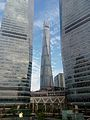
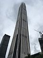
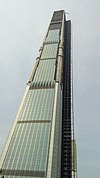

Shanghai Tower (chiń. 上海中心大厦; pinyin Shànghǎi Zhōngxīn Dàshà) – wieżowiec znajdujący się w dzielnicy Pudong w Szanghaju w
bezpośrednim sąsiedztwie Jin Mao oraz SWFC. Budowa zaczęła się w 2008 r. jej zakończenie zaplanowano na rok 2015, ostatecznie budynek został oddany do użytku w roku 2017.
Inwestorem oraz wykonawcą jest Shanghai Tower Construction & Development Co., Ltd. reprezentująca trzy firmy: Shanghai Chengtou Corp., Luijiazui Finance & Trade Zone Development
Co., Ltd., oraz Shanghai Construction Group. Wieżowiec zaprojektowało biuro architektoniczne Gensler. Koszt budowy wyniósł 2,4 mld $.
Wieżowiec jest najwyższym w Chinach oraz trzecim pod względem wysokości na świecie, niższym tylko od Burdż Chalifa w Dubaju w Zjednoczonych Emiratach Arabskich i
Merdeka 118 w Kuala Lumpur w Malezji.
Bryła budynku składa się z 9 nałożonych na siebie, walcowatych budynków otoczonych podwójną fasadą. Pierwsza warstwa fasady otacza te budynki bezpośrednio
się z nimi stykając, druga stanowi zewnętrzną fasadę całej budowli. Przestrzeń pomiędzy nimi wypełniona zostanie przez dziewięć atriów.
Budynek został tak skonstruowany, aby zmniejszyć nacisk wywierany przez wiatr, umożliwić zbieranie deszczówki celem wykorzystania jej w systemach
HVAC oraz umożliwić generowanie energii przez turbiny wiatrowe. Właściciele budynku ubiegają się o certyfikację China Green Building Committee oraz U.S. Green Building Council.
Budynek ma ponad 220 tysięcy metrów kwadratowych powierzchni użytkowej.
Dla porównania, łączna powierzchnia biur w Szczecinie na koniec 2016 roku wynosiła 156 tysięcy metrów kwadratowych.
Pomieszczenia są wykorzystywane przede wszystkim przez biura, a poza nimi obiekty handlowe, rozrywkowe oraz konferencyjne. W obiekcie znajdzie się również jeden z najwyżej położonych hoteli
na świecie – Shanghai Tower J Hotel firmy Jin Jiang Hotels. W jego ofercie znajdzie się 258 pokoi zlokalizowanych na piętrach 84-110. W podziemnych kondygnacjach znajduje się 3-poziomowy parking podziemny,
powierzchnie handlowe oraz połączenie z metrem. Na jednym z najwyższych pięter znajduje się taras widokowy.

Ping An Finance Center (chiń.: 平安金融中心; pinyin: Píng’ān jīnróng zhōngxīn) – wieżowiec w Shenzhen, w prowincji Guangdong, w Chińskiej Republice Ludowej.
Wysokość całkowita budynku wynosi 599 m co czyni go najwyższym wieżowcem w Shenzhen i drugim co do wielkości w Chinach[1], został otwarty w 2017 roku. Stał się najwyższym wieżowcem biurowym na świecie.
Koszt budynku to ok. 5,49 miliarda złotych ($ 1,5 miliarda) co przy 385 918 metrach kwadratowych powierzchni użytkowej daje ok. 14225,81 złotych za metr kwadratowy.

China 117 Tower (chiń. 高银金融117; pinyin Gāoyín Jīnróng 117) – budowany wieżowiec w Tiencinie, w Chinach. Budowa zaczęła się w 2008 roku.
Do 2020 roku wieżowiec osiągnął wysokość 597 metrów do dachu i miał 117 kondygnacji.